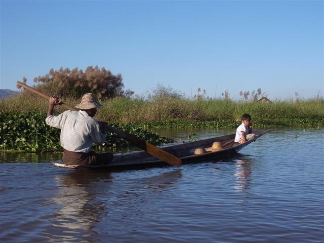

在 monastery 中過夜，五時左右，僧人陸續來到大堂集合，然後一起頌經，所以早上五時便會醒來，但還睡在床上，因為外面很冷，沒事做，就這樣躺著，聽著頌聲等天亮。
吃完早餐 Harri 帶我們到主持那裏，然後捐點錢，主持為我們每人的手繫上一條白色的繩，繫的時候口中唸著不知什麼，說這是祝福，我那時心想我這個旅程也要戴著它，可是同一天我便把它不知掉到哪兒去了，多數是用手伸入袋中拿東西時弄失的，我的祝福，不夠一天就沒有了。
其實我今次來緬甸，最想去的地方是 Mrauk U，但交通不方便，好像如何也要從 Yangon 乘飛機去 Sittwe，再轉一天的船。我希望這只是舊資料，最好是能由 Bagan 飛去，不用再回到 Yangon，所以一有機會我就會問當地人。問 Harri，他竟然想都沒想，就答我可以從 Bagan 飛去，這個好消息，令我開心了好一陣子。
今天的行程，只用了上午，預期是中午到達 Inle Lake，不過我們一行人實在超慢，結果二時才到。途中我和 Christy 談到香港教育，原來她教國際學校，也不是很容易，家長們一樣是很喜歡干涉教程，以及安排各種技能要小孩子學，令到小孩沒有時間。
臨近終點，看見不遠處一層像雲海的氣，這層氣下面就是 Inle Lake 了。
Trekking 的終點是在湖的西邊的 Inthein，我們在這裏吃午餐，我叫了麵，結果又是即食麵。臨別前還有一件事未解決，就是向 Golden Lily 的追討，可是如我所料，Harri 又說這裏沒電話，但卻說可以到 Nyaungshwe 才辦。因為我、 Helen 和 Barry 會坐同一條船，他們又想遊一遊 Inthein 才坐船離開，Harri 就和那家人一起先坐船到 Nyaungshwe，他應承我會在 Nyaungshwe 等我到五時。
我們只有匆匆忙忙，佷趕急地遊，Inthein 有一座小山上的廟，上山前的通道的紀念品檔有林林總總的東西，每檔都好像有新東西，很神奇。
很快又要離開，到渡頭乘船之前，要付五美元 Inle Lake 入場費，一年前還是三美元。船身很長，先經過彎彎曲曲小河道，然後不久像出了大海般，真正進入 Inle Lake，很廣闊。船先到 Golden Island Cottages 2，很豪華，Barry 和 Helen 就入住這裏。
湖很大，船由 Inthein 駛到 Golden Island Cottages 2 再到 Nyaungshwe 要一小時再多一點，我到達 Nyaungshwe 時已經過了五點，急急上岸跑去找要入住的旅館 Little Inn，雖然我過了鐘，但 Harri 還在等我，看來他也是很守信用的人，不過 Little Inn 的電話也失靈（怎麼找個電話也這麼難），Harri 過了對面的 Aquarius Inn 借電話。
我 check in 後 Harri 回來，我們在 Little Inn 的花園坐。說起來 Little Inn 雖然很便宜只用 6 USD，但卻有一間雙人床的房間和私人浴廁，還有個美麗的花園。Harri 計完一輪似是而非的數，說只能退給我 9 USD，連之前的 10 USD，其實若要仔細和他理論，應該要退更多，但他趕著回去 Kalaw，我也覺得很累，就此完結。
天快黑，行去找晚飯吃，Nyaungshwe 和 Kalaw 一樣，和我想像很不同，Nyaungshwe 原來是一個寧靜的小鎮，房子全都十分矮，只有一至兩層，路很闊，人們踏著單車經過，很寫意。
可惜在這寧的地方卻遇著兩個討厭鬼住在隔籬房，真不知是他們說話超大聲還是 Little Inn 的牆勁簿，整晚都聽到他們的說話，好不容易睡著，卻被他們其中一人的鼻鼾聲弄醒，真係咁都得。
Bogyoke (General) Aung San
Inthein
